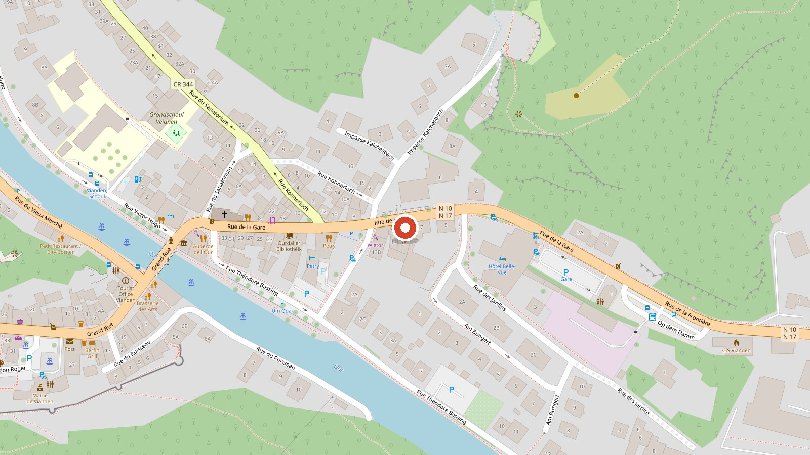

Öffnungszeiten
Montags Ruhetag.
Wir freuen uns auf Ihren Besuch – im Restaurant, zur Abholung oder per Lieferung.
Montags Ruhetag.
9, Rue de la Gare
L-9420 Vianden
Im Zentrum von Vianden, wenige Schritte von der Our.
Route planenFür Reservierungen und Fragen erreichen Sie uns am besten per E-Mail.
Sagen Sie uns Datum, Uhrzeit und Personenzahl – wir bestätigen Ihre Reservierung kurzfristig per E-Mail.
Tisch reservierenMitten in Vianden, wenige Schritte von der Our. Tippen Sie auf die Karte, dann öffnet sich die Route.

In Google Maps öffnen
Restaurant Fuku
9, Rue de la Gare
L-9420 Vianden
Luxembourg
Handelsregister, Umsatzsteuer-Identifikationsnummer und vertretungsberechtigte Person werden hier ergänzt.
Diese Website lädt Schriften und Gestaltungsdateien ausschliesslich vom eigenen Server. Es werden keine Analyse- oder Werbedienste eingebunden und keine Cookies zu Werbezwecken gesetzt.
Ihre Warenkorbauswahl wird nur lokal in Ihrem Browser gespeichert. Erst beim Klick auf „Zur Kasse“ werden die gewählten Gerichte an unser Bestellsystem übertragen. Die Karte von OpenStreetMap wird erst geladen, wenn Sie sie ausdrücklich anfordern.
Für Bestellung und Zahlung gelten zusätzlich die Datenschutzhinweise unseres Shop-Systems.